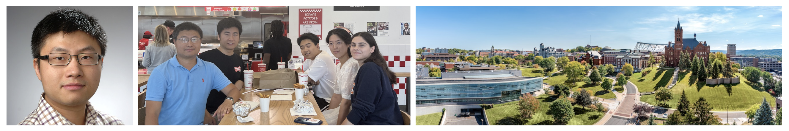

The Full-Stack Systems Security Lab (FSSL) of the Department of Electrical Engineering and Computer Science (EECS) at Syracuse University in New York, USA, is led by Associate Professor Yuzhe Tang [tristartom.github.io]. Their research interest is systems security and performance in distributed systems, including blockchains, smart contracts, decentralized systems, open-source software and supply-chains, edge networking and edge AI/LLM services. The research results have been published in top computer-science conferences, including IEEE S&P, USENIX Security, ACM CCS, NDSS, ACM IMC, ESEC/FSE, ACM WWW, IEEE ICDE, ACM Middleware, Euro S&P, etc. Professor Tang also served in numerous program committees, including IEEE S&P, ACM CCS, NDSS, ACM WWW, Euro S&P, ACSAC, RAID, etc. Details are on his website: [tristartom.github.io].
Their research results have been recognized by the industry: the bugs found by FSSL Lab have won the bug bounty granted by Ethereum Foundation, and the security patches developed have been integrated into blockchain software used by the public, such as Geth, Besu and OpenEthereum. The laboratory has sufficient research funds from the National Science Foundation (NSF) and the Ethereum Foundation.
There are currently seven doctoral students in the FSSL research group, and they often organize activities in addition to studying [link]. The Ph.D. alums from FSSL lab have joined American universities as tenure-track assistant professors. Students have received the Ethereum Protocol Fellowship and NortonLifeLock fellowship finalist, and have interned at major companies such as IBM Research, Amazon, CertiK, etc.
The laboratory has 1 doctoral student opening (PhD) expected to enroll in the fall of 2025 with a full research scholarship (GRA). General requirements for Ph.D. admission:
Strong motivation for research in computer systems and systems research.
Coding experiences in real-world open-source projects in the following domains:
Blockchains, distributed systems, network protocols, AI/LLM systems, etc.
Experiences of using or developing tools in:
Program analysis, symbolic execution, or software fuzzing
Applied-cryptography libraries and protocols
Experiences in CTF (capture the flag) or other forms of competitions in network attacks and defenses
Experiences in CTF (capture the flag) or other forms of competitions in network attacks and defenses
If you are interested in the PhD position, you can contact Dr. Tang (ytang100@syr.edu) with your C.V. and transcript. Feel free to attach your representative papers or mention anything that you think can boost your chance of successful admission. You may also read one paper of your choice from his recent publications: [link], and share your thoughts (e.g., open problems or future works).
Please consider applying for the EECS PhD program (CISE or ECE) at Syracuse University. The application deadline is on the school website: [link]
|  |
About the Department of Computer Science at Syracuse University: Syracuse University is an R1 research university. The Department of Computer and Electronic Engineering has always been at the forefront of computer science in the United States. Currently, the department has 42 faculty members, and the awards received by professors in the department include many IEEE fellows, ACM fellows, AAAS fellows, etc.
Syracuse University is a private research university that prioritizes students and has a doctoral student union. Syracuse University ranks first in the United States in public administration, and many disciplines are ranked in the top ten in the United States. The School of Information, Maxwell School of Citizenship and Public Affairs, Newhouse School of Public Communications, Martin J. Whitman School of Business and School of Law are all among the best in the United States. Syracuse University has a strong sports atmosphere and has the largest university gymnasium in the United States. Syracuse University's basketball team won the national championship in 2003, and the football team won the national championship in 2022 this year. NBA superstar Carmelo Anthony donated $3 million to his alma mater, Syracuse University, to build a new basketball training venue. Outstanding alumni of Syracuse University include current US President Joe Biden and current New York Governor Kathy Hochu.
Syracuse, also translated as Syracuse, is the fifth largest city in New York State, the United States. It is the economic and educational center of central New York and a transportation hub. Syracuse has many Chinese restaurants (Sichuan cuisine, Northeastern cuisine, hot pot, barbecue) and Chinese supermarkets, as well as gourmet restaurants from all over the world such as Thailand, Korea, and India. Syracuse has cool weather in summer, and there are many beautiful mountains and lakes around it, which is very suitable for outdoor enthusiasts. Due to the climate effect of the lake area, there is abundant snowfall in winter, making it a popular destination for skiing enthusiasts. Micron Technology, a global microchip manufacturer, will invest $100 billion to build the world's largest semiconductor factory near Syracuse. This will greatly promote the economic development and consumption upgrade of Syracuse.